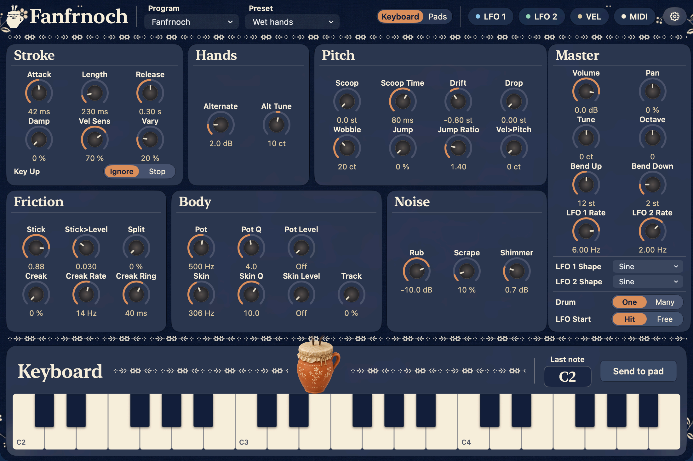
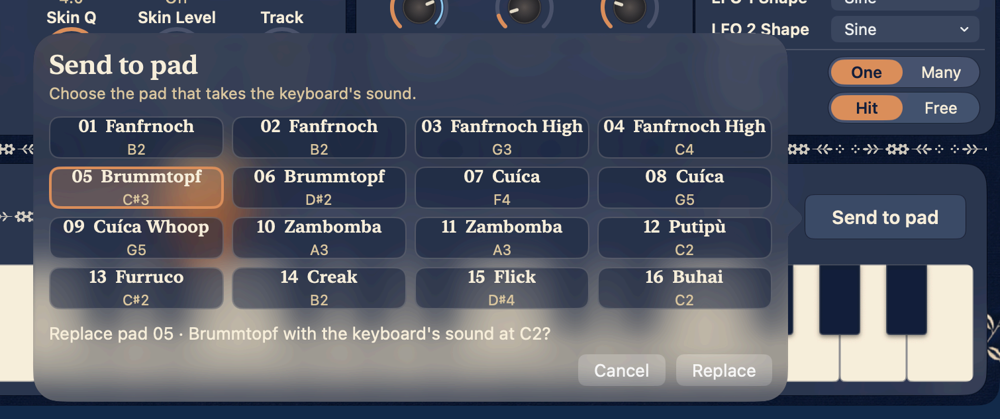

Getting started
- Download the disk image from the download page and open it.
- Drag Fanfrnoch to Applications and start it from there.
- Click a key of the keyboard at the bottom of the window. Near the top of a key the stroke is soft, further down it is firmer. A MIDI keyboard plays it too: the app listens to every connected MIDI device until you choose one.
- The sound goes to the macOS output. To choose another device, or one MIDI device or channel, click the gear at the right of the header (Settings; see Settings).
- To play Fanfrnoch in a host such as Logic Pro or Ableton Live, open Settings and click Install Audio Unit (see The Audio Unit plug-in).
Fanfrnoch is a friction drum: a clay jug covered with a skin, two tufts of horsehair through it, pulled by wet hands. Every note is one pull of a hand, a stroke. The app remembers the sound between launches: the keyboard's knobs, all sixteen pads, the mode, the selected pad and the preset each sound came from. It also keeps your MIDI controllers (see MIDI controllers).
The main window

- 1Program
- Loads one of the twelve built-in sounds into the knobs (see The header).
- 2Preset
- Your own sounds, saved as files: load one into the knobs, save the knobs as one, delete one (see Presets).
- 3Keyboard | Pads
- The mode: the keys play one sound at their pitch, or notes 36–51 hit sixteen pads that each hold a sound of their own (see Keyboard mode and Pad mode).
- 4LFO 1, LFO 2, VEL
- Turn the knobs into the amounts by which an LFO or the velocity of a stroke moves them (see LFO and VEL amounts).
- 5MIDI
- Shows which MIDI controller moves each knob and switch, and lets them learn new ones (see MIDI controllers).
- 6Settings
- MIDI input, audio output and the Audio Unit installer. Only the app has it.
- 7Stroke, Hands, Pitch, Friction, Body, Noise, Master
- The knobs and switches of the sound, in seven groups (see Knobs and switches). In keyboard mode they show the keyboard's sound, in pad mode the selected pad's.
- 8Last note
- The last note played in keyboard mode, C2 before any. It is the pitch Send to pad gives a pad.
- 9Send to pad
- Copies the keyboard's sound to one of the pads (see Send to pad).
- 10Keyboard
- Three octaves, C2 to B4. Click a key to play it: at the top of a key the stroke has velocity 40, at the bottom 127. Letting go of the key, or dragging off it, is the key's release (it matters for Key Up = Stop); dragging onto another key does not play it. In pad mode the pads take this place.
The header
- Program
- The twelve built-in programs: the Czech fanfrnoch and its relatives. A program sets every knob, switch and amount of the sound the knobs show, except Octave: in keyboard mode the keyboard's sound, in pad mode the selected pad's. The program in use is ticked.
- Fanfrnoch: the defaults, the Czech carollers' horsehair drum: a pull of 230 ms, the two hands a little apart.
- Fanfrnoch High: the upper drum of a pair: shorter pulls, the hands further apart.
- Brummtopf: the German “growling pot”: short and dry, with a strong pot resonance.
- Zambomba: the Spanish zambomba: the skin rings along, and about one stroke in five jumps up to it.
- Zambomba Grave: a big zambomba: a low, broad pot and a longer ring.
- Putipù: the Neapolitan putipù: a slow, deep, rubbing growl through a loud pot.
- Cuíca: the Brazilian cuíca: short, clean, high strokes, the two hands far apart.
- Cuíca Whoop: the cuíca's whoop: every stroke scoops up 6.6 semitones into its pitch.
- Furruco: the Venezuelan furruco: low and rough, its periods unequal.
- Creak: the tone broken into separate slips, each ringing the skin, like a creaking door.
- Flick: no rubbing at all, only the flick of a finger across the hair.
- Buhai: the Romanian buhai: long, slow, low pulls (made by ear: no recording of one was measured).
- Preset
- Your presets, the sounds you have saved. Like Program, it works on the sound the knobs show. Its title is the preset that sound came from, or “—” (see Presets).
- Keyboard | Pads
- Switches between the two modes. The switch is not a sound setting: changing it keeps every sound as it is.
- LFO 1, LFO 2, VEL
- One of these three and MIDI can be on at a time. While one of the three is on, the knobs set that source's amounts; click it again to get the knobs back (see LFO and VEL amounts).
- MIDI
- While it is on, every knob and switch of the keyboard's sound shows its MIDI controller instead of its value, and a click makes it learn a new one; click MIDI again to get the values back (see MIDI controllers). The button's secondary-click menu gives every control its standard controller back.
- Settings (the gear)
- Opens Settings. The plug-in's window has no gear: there MIDI and audio come from the host.
When a preset or a kit cannot be saved, loaded or deleted, for example because its file was removed in the Finder or is damaged, a one-line message says so under the Program and Preset menus for four seconds. Nothing else changes.
Knobs and switches
A knob 1 shows its name above it and its value below it; the terracotta arc shows where it stands. Drag a knob up or down: 200 points of travel turn it from end to end. Hold Shift while dragging for steps ten times finer. Double-click a knob to take it back to its value in the preset the sound came from or, without one, in the program last loaded. A switch 2 shows its choices side by side; click one. The LFO shapes, which have more choices, are menus.
The ranges and defaults below are those of the program Fanfrnoch. A level knob whose range ends in “Off” is silent at the bottom of its travel.
Stroke
One pull of the hand down the horsehair: how the drum starts to speak, how long the hand rubs and how the drum rings out after it.
- Attack (5–400 ms, default 42 ms)
- How long a stroke takes to build up, as the skin starts to swing under the hand.
- Length (0–2000 ms, default 230 ms)
- How long the hand rubs. Then the hand leaves the hair and the drum rings out in the Release time. At 0 the hand leaves at once: a short knock.
- Release (0.03–3 s, default 0.30 s)
- How long the drum rings after the hand stops: the time it takes to fall by 60 dB.
- Damp (0–100 %, default 0 %)
- Shortens that ring, as a hand laid on the skin would: at 100 % the drum falls three times faster than Release says.
- Key Up (Ignore, Stop; default Ignore)
- What letting go of a key or a pad does. Ignore: the hand rubs for the whole Length, however briefly the key was held. Stop: the hand stops when the key is let go, never later than Length, so short notes give short strokes.
- Vel Sens (0–100 %, default 70 %)
- How much the velocity changes the stroke's level: a softer stroke is quieter by the factor 1 − Vel Sens × (1 − velocity). At 0 every stroke is as loud as the hardest. Whatever Vel Sens says, a softer stroke also rubs more quietly and darkens sooner as it fades (see Stick>Level).
- Vary (0–100 %, default 20 %)
- A random difference between one stroke and the next, as no hand pulls twice alike. At 20 % the length of a stroke varies by up to 10 %, its level by up to 0.75 dB and its pitch by up to 12.5 cents; at 100 % by five times as much.
Hands
A player pulls with both hands in turn, and the two hands never pull quite alike.
- Alternate (0–12 dB, default 2 dB)
- Every second stroke of a drum is this much quieter: the weaker hand. The strokes are counted per drum (see Keyboard mode and Pad mode).
- Alt Tune (−100 to +100 ct, default +10 ct)
- The weaker hand's stroke sounds this many cents off the other's.
Pitch
How the pitch moves within a stroke. A friction drum is never quite steady: the pressure of the hand bends it.
- Scoop (0–12 st, default 0 st)
- The stroke starts this many semitones below its pitch and slides up into it, the cuíca's whoop.
- Scoop Time (10–300 ms, default 80 ms)
- How long that slide takes.
- Drift (−3 to +3 st, default −0.80 st)
- How far the pitch moves over the Length of the stroke, in semitones: a falling pull below 0, a rising one above.
- Drop (0–2 st, default 0 st)
- When the hand leaves the hair, the pitch falls this far within about 15 ms.
- Wobble (0–60 ct, default 20 ct)
- The unsteadiness of the hand: a random wavering of the pitch, in cents.
- Jump (0–100 %, default 0 %)
- The chance that a stroke jumps up to a higher mode of the skin, after 70 % of its Length. At 100 % every stroke jumps.
- Jump Ratio (1.10–2.50, default 1.40)
- How far up a jump goes, as a ratio of frequencies: 1.40 is about 5.8 semitones, 2.00 an octave.
- Vel>Pitch (0–100 ct, default 0 ct)
- A harder stroke sounds higher: at full velocity by this many cents, at velocity 0 not at all.
Friction
How the wet hand sticks to the hair and slips: this shapes the drum's tone.
- Stick (0.50–0.95, default 0.88)
- The part of each vibration for which the skin sticks to the hand before it slips. Higher values make a sharper slip: a brighter, buzzier tone. The aftertouch adds to it.
- Stick>Level (0–0.100, default 0.030)
- How much less the skin sticks as the stroke grows quiet: the tone darkens as it fades, and sooner for a soft stroke.
- Split (0–100 %, default 0 %)
- Makes every other vibration longer and the next one shorter, and a little louder and softer: a rough, growling tone an octave lower creeps in.
- Creak (0–100 %, default 0 %)
- Breaks the tone into separate slips, each of which rings the skin, like a creaking door. At 100 % only the slips are left.
- Creak Rate (4–40 Hz, default 14 Hz)
- How many slips a second the creak makes, with a little randomness.
- Creak Ring (10–100 ms, default 40 ms)
- How long each slip rings the skin.
Body
The jug and its skin, which ring along with the tone: two resonances, each with its frequency, its sharpness and its level.
- Pot (150–1500 Hz, default 500 Hz)
- The resonance of the jug's body, the air inside it.
- Pot Q (1.0–20.0, default 4.0)
- How sharp the pot's resonance is: low values ring broadly, high values ring at one pitch.
- Pot Level (−40 to +18 dB, Off; default Off)
- How loud the pot's resonance is.
- Skin (100–1500 Hz, default 306 Hz)
- The resonance of the skin, a mode of the membrane. The creak's slips ring at it too.
- Skin Q (1.0–40.0, default 10.0)
- How sharp the skin's resonance is.
- Skin Level (−40 to +6 dB, Off; default Off)
- How loud the skin's resonance is.
- Track (0–100 %, default 0 %)
- How far the pot and the skin follow the note. At 0 they stay where the knobs put them, as a real jug does; at 100 % they move with the pitch, from where they stand at B2.
Noise
What the hand adds beside the tone.
- Rub (−40 to 0 dB, Off; default −10 dB)
- The noise of the wet hand rubbing on the hair, loudest while the skin slips and with a hard stroke. The mod wheel adds to it.
- Scrape (0–100 %, default 10 %)
- The short scrape of the fingers at the start of a stroke, gone within a few tens of milliseconds.
- Shimmer (0–3.0 dB, default 0.7 dB)
- A random flutter of the level, as the grip on the hair keeps changing.
Master
- Volume (−40 to +6 dB, default 0.0 dB)
- The level of the sound.
- Pan (−100 to +100 %, default 0 %)
- Left or right in the stereo output. Useful for placing pads apart.
- Tune (−100 to +100 ct, default 0 ct)
- Fine tuning in cents.
- Octave (−2 to +2, default 0)
- Moves the sound by octaves. At 0 a note sounds at its own pitch: B2 (note 47) is 123.5 Hz. Programs leave this knob where it is.
- Bend Up (0–24 st, default 12 st), Bend Down (0–12 st, default 2 st)
- How far the pitch bend wheel bends the drum at its ends, up and down, in semitones: the cuíca player's pressing finger.
- LFO 1 Rate, LFO 2 Rate (0.02–20 Hz, defaults 6.00 Hz and 2.00 Hz)
- How often each LFO goes round. What an LFO moves, and how far, is set on the knobs themselves (see LFO and VEL amounts).
- LFO 1 Shape, LFO 2 Shape (Sine, Triangle, Ramp Up, Ramp Down, Square, Steps, Wander; default Sine)
- The shape of each LFO's cycle. Sine and Triangle sway; the ramps rise or fall and jump back; Square switches between two places; Steps takes a new random place every cycle and holds it; Wander takes one and moves there smoothly.
- Drum (One, Many; default One)
- How many drums the keyboard plays. One: all notes are one drum, as with one fanfrnoch in your hands. Many: every note is a drum of its own. See Keyboard mode.
- LFO Start (Hit, Free; default Hit)
- Hit starts both LFOs anew with every stroke, so the same stroke always moves the knobs the same way. Free lets them run on, and each stroke joins them where they are.
Keyboard mode
Every MIDI note, and every key on the screen, strikes the keyboard's sound at the note's pitch. That sound is what the knobs show in this mode.
- A stroke on a sounding drum continues it. With Drum = One all notes are one drum: a new note does not start a second voice but goes on from where the head is, at the new pitch, so strokes run into each other with a dip, not a click, and Alternate counts the strokes across all notes. With Drum = Many every note is a drum of its own: different notes sound over each other, and striking the same note again continues that note's drum.
- A sounding stroke follows the knobs: turn one and you hear the change at once. What a stroke draws when it starts is the exception: Length, Vary's random differences, Alternate, Alt Tune, Vel Sens, Vel>Pitch, Jump's chance, Scrape and Octave count from the next stroke.
- Sixteen voices sound at most, pads included. A stroke on a silent drum that would be the seventeenth stops the quietest voice within a few milliseconds.
- Velocity
- Shapes the stroke as Vel Sens and Vel>Pitch say, and moves the knobs that have a VEL amount (see LFO and VEL amounts).
- Pitch bend
- Bends the drum's pitch, by up to Bend Up semitones upward and Bend Down downward.
- Mod wheel (CC 1)
- Rubs harder: adds up to 20 dB of Rub, half its travel, never past 0 dB.
- Aftertouch (channel pressure)
- Presses harder: adds up to 0.07 of Stick, never past 0.95.
The wheels act on the keyboard's sound only; pads do not follow them. Reset All Controllers (CC 121) puts all three back to rest, and All Sound Off and All Notes Off (CC 120 and 123) fade every voice out within 10 ms.
Other MIDI controllers turn the knobs and switches themselves (see MIDI controllers).
Pad mode

In pad mode 5 the MIDI notes 36–51 (C2–D♯3) hit pads 1–16: note 36 is pad 1, note 37 pad 2, and so on, as on an MPC or in an Ableton Drum Rack. Other notes are ignored. Each pad holds a sound of its own, frozen with it, and plays it at a pitch of its own, whatever note hits it.
- 1The pads
- Pad 1 is at the top left and the pads run row by row. Each shows its number, and its name above its pitch and its group (“B2 G1”; “Off” when it has none). A pad's name is that of the preset its sound came from or, without one, that of its program. A pad lights up when it is hit, from the screen or from MIDI.
- 2Selecting and playing a pad
- Click a pad to play it and select it; the selected pad has a terracotta outline. As on the keys, near the top the stroke is soft and further down it is firmer. The pad is held until you let go of the mouse button, which matters for Key Up = Stop.
- Editing a pad
- The knobs show the selected pad's sound, and turning them changes that pad only. 4 Program and Preset load into the selected pad. The keyboard's sound is left alone, and so are the other pads.
- 3Pitch and group
- Beside the pads: which pad is selected, its pitch and its group (see below), and the Kit menu (see Kits).
A pad's stroke uses the pad's sound as it stood when the pad was hit: turning a knob changes the next stroke, not one that sounds.
Pitch and group

- 1Selected
- The number and name of the selected pad.
- 2Pitch
- The note the pad plays, from C-1 to G9, chosen in submenus by octave. The pad's Octave and Tune still apply.
- 3Group
- The pad's group: Off or 1–16. Pitch and group belong to the pad, not to its sound: loading a program or a preset leaves them alone.
- 4Kit
- Loads, saves and deletes kits: all sixteen pads at once (see Kits).
Groups: one drum
All the pads of a group are one drum, played by one pair of hands. A hit on any of them does not start a second voice: it goes on from where that drum is, with the new pad's sound and pitch, so the strokes run into each other as on a real drum, and Alternate counts the strokes of the whole group (pads 1 and 2 of the default kit are the two hands of one fanfrnoch). A pad whose group is Off is a drum of its own: hit again, it goes on from where it is; two such pads sound over each other.
The default kit
On the first launch, and in every new plug-in instance, the pads hold this kit; Kit › Default kit brings it back. Groups 1–6 are six drums; the last four pads ring on their own.
| Pad | Program | Note | Group |
|---|---|---|---|
| 01 | Fanfrnoch | B2 (47) | 1 |
| 02 | Fanfrnoch | B2 (47) | 1 |
| 03 | Fanfrnoch High | G3 (55) | 2 |
| 04 | Fanfrnoch High | C4 (60) | 2 |
| 05 | Brummtopf | C♯3 (49) | 3 |
| 06 | Brummtopf | D♯2 (39) | 3 |
| 07 | Cuíca | F4 (65) | 4 |
| 08 | Cuíca | G5 (79) | 4 |
| 09 | Cuíca Whoop | G5 (79) | 4 |
| 10 | Zambomba, Jump 0 % | A3 (57) | 5 |
| 11 | Zambomba, Jump 100 % | A3 (57) | 5 |
| 12 | Putipù | C2 (36) | 6 |
| 13 | Furruco | C♯2 (37) | Off |
| 14 | Creak | B2 (47) | Off |
| 15 | Flick | D♯4 (63) | Off |
| 16 | Buhai | C2 (36) | Off |
Send to pad

Send to pad turns a sound made on the keyboard into a pad.
- In keyboard mode, set up the sound and play the note the pad should have. Last note beside the button shows it.
- Click Send to pad. The sixteen pads appear with their names and pitches.
- Click the pad to replace 1. Fanfrnoch asks 2 whether to replace it, naming the pad and the pitch.
- Click Replace (or press Return) to copy; Cancel (or Esc) keeps the pad as it was.
The pad takes every knob, switch and amount of the keyboard's sound, its program, the preset it came from if any, and, as its pitch, the last note played (C2 if none was). It keeps its group.
Presets
A preset is one sound saved as a file: the program it started from and every knob, switch and amount, Octave included. You can load it into the keyboard or into any pad, as often as you like. A pad's pitch and group are not part of it.

- 1The Preset menu
- In the header, beside Program. Its title is the preset the sound the knobs show came from, or “—”. The menu looks into the folder each time it opens, so a preset just saved by the plug-in in a host, or copied into the folder, is there.
- 2Loading a preset
- Click a preset to load it into the sound the knobs show: the keyboard's in keyboard mode, the selected pad's in pad mode. The other sounds stay as they are. The preset in use is ticked.
- 3Save as…
- Saves the sound the knobs show as a preset (see Saving a preset).
- 4Delete
- A submenu of your presets. Fanfrnoch asks “Delete “Wet hands”? It goes to the Trash.”: Delete moves the file to the Trash, Cancel (or Return, or Esc) keeps it. A sound that came from the deleted preset keeps its knobs.
Saving a preset

- Set up the sound, then choose Preset › Save as….
- Type a name 1. The field starts with the name of the preset in use, if there is one. Under it Fanfrnoch says what is stored 2.
- Click Save 3 or press Return. Cancel or Esc saves nothing.
A name can have up to 60 characters. Spaces at its ends are dropped, and “/” and “:” become “-”. If a preset of that name exists already (capitals do not count), Fanfrnoch asks “Replace “Wet hands”?”: Replace saves over it, Cancel takes you back to the name. Sounds that came from the old version keep their knobs, but a double-click now takes a knob to the new version's value.
The preset in use
Each sound, the keyboard's and every pad's, remembers the preset it came from. The menu's title and its tick show it, a pad shows its name, and a double-click takes a knob back to the preset's value. Turning knobs keeps the link. Loading a program ends it, and the title shows “—” again; so does deleting the preset's file, after which a double-click goes to the program's value.
Where presets are kept
Each preset is a file named after it, with the extension .fanfrnoch, in ~/Library/Application Support/Fanfrnoch/Presets. The app and the plug-in use the same folder, so a preset saved in one is in the other's menu too. You can copy the files to another Mac, or rename them in the Finder. Fanfrnoch makes the folder when you save your first preset.
Kits
A kit is all sixteen pads saved as one file: each pad's sound, pitch and group, and the preset each sound came from. Loading a kit replaces all sixteen pads at once; the keyboard's sound and the mode stay as they are.

- 1Kit
- The menu beside the pads, in pad mode. Its title is always “Load or save”: once a kit is loaded, its pads are edited one by one, so no kit is ticked.
- 2Your kits
- Click one to load it into the pads. A pad whose preset is still in the Presets folder is linked to it again.
- 3Default kit
- Brings back the kit Fanfrnoch starts with (see The default kit).
- 4Save kit as…
- Saves the sixteen pads as a kit. Naming works as for a preset (see Saving a preset).
- 5Delete kit
- A submenu of your kits. After you confirm, the kit's file goes to the Trash.
Kits are files with the extension .fanfrnochkit in ~/Library/Application Support/Fanfrnoch/Kits, shared by the app and the plug-in like presets.
LFO and VEL amounts
Two LFOs and the velocity of each stroke can move the knobs for you. Every knob they can move has an amount for each of them: how far that source moves it, as a part of the knob's travel, from −100 to +100 %. The amounts belong to the sound, like the knobs, so every pad has its own. They all start at 0, in every program.

- Setting an amount
- Click 1 LFO 1, LFO 2 or VEL in the header; the button lights up in its colour (LFO 1 sky blue, LFO 2 mint, VEL parchment). The knobs now show that source's amounts below them 2: drag a knob up for a positive amount, down for a negative one. An amount within 1 % of zero is zero. Double-click a knob to set its amount back to 0. Click the button again to get the knobs back.
- Seeing it
- A knob a source moves shows a thin arc in that source's colour inside its value arc 3, also when the buttons are off, so you see what is moving. The knob's pointer stays where you put it.
- What steps back
- Knobs and switches a source cannot move are dimmed while its button is on 4.
LFOs
An LFO swings a knob either way from where it stands, by its amount of the knob's travel, and never past the knob's ends. A negative amount turns the movement round. Both LFOs can move the same knob; their movements add up. The LFOs' rates, shapes and start are in Master; each voice runs LFOs of its own, and with LFO Start = Hit they start anew with every stroke. With Tune at 0, an amount of 50 % already swings the pitch a whole semitone (100 cents) either way.
The LFOs can move Tune, Stick, Rub, Pot, Pot Level, Skin Level, Wobble, Creak, Split, Volume and Pan.
VEL

The knob is where a stroke at full velocity puts it. A softer stroke moves it away by amount × (1 − velocity) of its travel, where velocity runs from 0 to 1 (MIDI 127 is 1). A positive amount means “the harder the stroke, the higher the value”: with Release at +40 %, a stroke at half velocity stands the Release knob 20 % of its travel lower, so soft strokes ring shorter. A negative amount works the other way round. The velocity is fixed for the stroke; LFO movements add to it.
Volume is the exception. Its VEL amount scales the level instead, by 1 − amount × (1 − velocity): the classic velocity-to-level. At +100 % a stroke at half velocity gets half the gain (−6 dB), on top of what Vel Sens does; at 0 % the velocity changes the level only through Vel Sens.
The velocity can move every knob of Stroke but Vel Sens (Attack, Length, Release, Damp, Vary), every knob of Hands, Pitch, Friction, Body and Noise, and Volume, Pan, Tune, LFO 1 Rate and LFO 2 Rate. The switches, Octave, Bend Up, Bend Down and Vel Sens have no VEL amount: Vel Sens is the velocity's own knob.
MIDI controllers
Every knob and switch of the keyboard's sound can follow a MIDI controller (a CC): a knob, fader or pedal of your MIDI keyboard or controller. Each comes with a standard controller (see the table below), so a controller that sends those numbers works at once, and any of them can learn another.

- 1Showing the controllers
- Click MIDI in the header; it lights up in cream. Each knob shows its controller below it instead of its value 2, and each switch in place of its choices 3: “CC 73”, or “—” for none. Click MIDI again to get the values back.
- 4Learning a controller
- Click a knob or switch: a dashed ring appears and it says “move a control”. Move a knob or fader of your controller: the first controller that moves is taken, and the control goes where that controller stands. Click the control again to stop listening; turning MIDI off, changing the mode, switching to another app or closing the window stops it too.
- The standard controller
- Double-click a knob or switch to give it its standard controller back.
- The secondary-click menu
- Control-click a knob or switch (or click it with two fingers): No controller leaves it without one, Back to CC 74 (its standard number) gives the standard one back. Every control back to its standard controller, in this menu and in the MIDI button's, resets them all.
- One controller moves one control. A controller learnt by one control is taken from the control that had it.
- A controller puts its control where its value says: 0 is the bottom of the travel, 127 the top. On a knob whose middle is 0 (Alt Tune, Drift, Pan, Tune, Octave), 64 is exactly the middle. A switch spreads its choices over 0–127.
- Controllers work on every MIDI channel; the app takes them on the channels chosen in Settings.
- Controllers move the keyboard's sound, in pad mode too. The pads and the LFO and VEL amounts have none, so with MIDI on in pad mode the controls are dimmed and show “—”.
- A sounding stroke follows a controller as it follows a turn of the knob (see Keyboard mode), from its next control step, a fraction of a millisecond later.
- The controllers belong to the app or the plug-in, not to a sound: loading a program, a preset or a kit leaves them alone. The app keeps them in its settings, so they are there after a relaunch. The plug-in keeps them with the host's project, each instance its own.
- In the plug-in, a knob a controller moves is reported to the host as if you had turned it.
The standard controllers
Where General MIDI gives a controller a meaning that fits, the control takes it: Volume 7, Pan 10, Stick 74 (brightness), Pot Q 71 (timbre), Release 72 (release time), Attack 73 (attack time) and Rub 2 (breath controller). The others take numbers that MIDI leaves undefined, in the order of the panel's groups.
| Control | CC | Control | CC |
|---|---|---|---|
| Attack | 73 | Pot | 87 |
| Length | 14 | Pot Q | 71 |
| Release | 72 | Pot Level | 88 |
| Damp | 15 | Skin | 89 |
| Key Up | 16 | Skin Q | 90 |
| Vel Sens | 17 | Skin Level | 102 |
| Vary | 18 | Track | 103 |
| Alternate | 19 | Rub | 2 |
| Alt Tune | 20 | Scrape | 104 |
| Scoop | 21 | Shimmer | 105 |
| Scoop Time | 22 | Volume | 7 |
| Drift | 23 | Pan | 10 |
| Drop | 24 | Tune | 106 |
| Wobble | 25 | Octave | 107 |
| Jump | 26 | Bend Up | 108 |
| Jump Ratio | 27 | Bend Down | 109 |
| Vel>Pitch | 28 | Drum | 110 |
| Stick | 74 | LFO Start | 111 |
| Stick>Level | 29 | LFO 1 Rate | 112 |
| Split | 30 | LFO 1 Shape | 113 |
| Creak | 31 | LFO 2 Rate | 114 |
| Creak Rate | 85 | LFO 2 Shape | 115 |
| Creak Ring | 86 |
Reserved controllers. CC 0–1, 6, 32, 38, 64, 96–101 and 120–127 keep their meanings in MIDI (bank select, data entry, sustain, parameter numbers and the channel messages). No control is given one, and learning ignores them. CC 1 is the mod wheel, which adds Rub (see Keyboard mode); CC 121 puts the wheels back to rest, and CC 120 and 123 stop every voice.
Free to learn, with no meaning in Fanfrnoch: CC 3–5, 8, 9, 11–13, 33–37, 39–63, 65–70, 75–84, 91–95 and 116–119.
Settings
The gear in the header opens them. They belong to the app; the plug-in takes MIDI and audio from its host.
- MIDI input › Device
- All devices (the default), None, or one connected keyboard or controller. A chosen device that is unplugged stays in the list as “not connected”; the app listens to it again as soon as it is back.
- MIDI input › Channel
- All channels or one of 1–16; messages on other channels are ignored.
- The “Fanfrnoch” MIDI port
- While the app runs, other applications can send MIDI to a port called Fanfrnoch. It obeys the channel setting.
- Audio output › Device
- System default or a specific audio device. System default follows the output chosen in macOS. A chosen device that is unplugged stays in the list as “not connected”, and the sound goes to the system default until it is back.
- Audio output › Channels
- Shown for a device with four or more outputs: the pair of channels the stereo sound goes to.
- Audio Unit plug-in
- Shows whether the plug-in is installed and in which version; Install Audio Unit installs or updates it.
The Audio Unit plug-in
- In the app, open Settings and click Install Audio Unit. This copies Fanfrnoch.component into ~/Library/Audio/Plug-Ins/Components.
- Restart your host or let it rescan its plug-ins.
- The instrument appears as Fanfrnoch by Jiri Pisa among the Audio Unit instruments.
The plug-in's window is the app's, without the gear: the same header, knobs, keyboard, pads and Send to pad. The keys and pads on the screen play the plug-in directly.
- Automation
- The host sees 103 parameters: the keyboard's sound, that is its 45 knobs and switches, 22 LFO amounts and 36 VEL amounts. Turning a knob in keyboard mode can be recorded as automation, and automation moves the knobs. The pads, their pitches and groups and the mode are not parameters: automation reaches the keyboard's sound only.
- Presets
- The twelve programs are the plug-in's factory presets; they load into the keyboard's sound. Your own presets are in the window's Preset menu, shared with the app (see Presets). When one is loaded into the keyboard, the host shows its name as the plug-in's preset; choosing a factory preset in the host ends that link.
- Saved with the project
- The keyboard's sound and its program, the mode, all sixteen pads (sound, pitch and group), the preset each sound came from, the MIDI controllers and the selected pad. A pad edit marks the project as changed half a second after you stop, or when you close the window. The plug-in's window opens on the pad selected last.
- Latency
- Below 88.2 kHz Fanfrnoch runs its voices at twice the host's rate, which delays the sound by 29 samples (0.6 ms at 48 kHz). The plug-in reports this to the host, which compensates. From 88.2 kHz up the latency is 0.
- Output
- Stereo. On a mono track the plug-in mixes both sides into one, so pads panned hard right are still heard.
After updating the app, click Install Audio Unit again to update the plug-in.
Updates
At every launch Fanfrnoch asks whether a newer version exists and, if so, offers it; nothing is installed without your OK. Fanfrnoch › Check for Updates… asks right away.